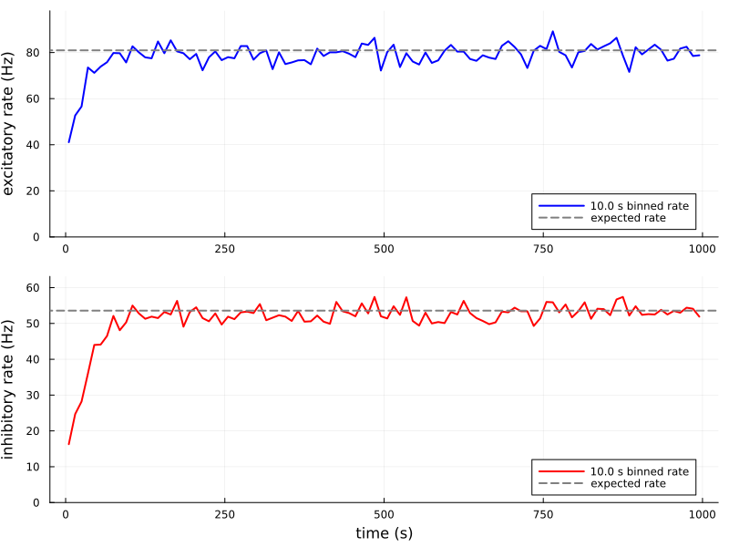

One excitatory and one inhibitory unit
This example considers two mutually connected units: one excitatory and one inhibitory. Each postsynaptic unit receives a connection from both units, for a total of four connections.
Initialization
using LinearAlgebra
using Plots
using Random
Random.seed!(0)
using HawkesPlasticNetworks; global const H = HawkesPlasticNetworksHawkesPlasticNetworksDefine the parameters
τ_kernel = [20.0,10.0]
weights = [1.3 -1.2; 1.2 -1.0]
input = [40.0,10.0]
simulation_end = 1_000.0
bin_width = 10.010.0The matrix uses post <- pre ordering. Its first column is excitatory and its second column is inhibitory. Connections store only positive magnitudes; the presynaptic population type determines whether a contribution is added or subtracted.
to_matrix(x::Real) = cat(x;dims=2)
weight_exc_exc = to_matrix(abs(weights[1,1]))
weight_exc_inh = to_matrix(abs(weights[1,2]))
weight_inh_exc = to_matrix(abs(weights[2,1]))
weight_inh_inh = to_matrix(abs(weights[2,2]))
expected_rates = (I-weights)\input
println("Expected excitatory rate: ",expected_rates[1])
println("Expected inhibitory rate: ",expected_rates[2])
#Expected excitatory rate: 80.95238095238098
Expected inhibitory rate: 53.571428571428584Define the populations and connections
population_exc = H.PopulationExpKernelExcitatory(
1,τ_kernel[1];label="exc")
population_inh = H.PopulationExpKernelInhibitory(
1,τ_kernel[2];label="inh")
connection_exc_exc = H.ConnectionWithWeights(
population_exc,weight_exc_exc,population_exc)
connection_exc_inh = H.ConnectionWithWeights(
population_exc,weight_exc_inh,population_inh)
connection_inh_exc = H.ConnectionWithWeights(
population_inh,weight_inh_exc,population_exc)
connection_inh_inh = H.ConnectionWithWeights(
population_inh,weight_inh_inh,population_inh)
connected_exc = H.ConnectedPopulationExpKernel(
population_exc,[input[1]],
(connection_exc_exc,population_exc),
(connection_exc_inh,population_inh))
connected_inh = H.ConnectedPopulationExpKernel(
population_inh,[input[2]],
(connection_inh_exc,population_exc),
(connection_inh_inh,population_inh))HawkesPlasticNetworks.ConnectedPopulationExpKernel{2, HawkesPlasticNetworks.PopulationExpKernelInhibitory{HawkesPlasticNetworks.Trace{Vector{Float64}, Float64}}, Tuple{HawkesPlasticNetworks.ConnectionWithWeights{Tuple{}}, HawkesPlasticNetworks.ConnectionWithWeights{Tuple{}}}, Tuple{HawkesPlasticNetworks.PopulationExpKernelExcitatory{HawkesPlasticNetworks.Trace{Vector{Float64}, Float64}}, HawkesPlasticNetworks.PopulationExpKernelInhibitory{HawkesPlasticNetworks.Trace{Vector{Float64}, Float64}}}}(HawkesPlasticNetworks.PopulationExpKernelInhibitory{HawkesPlasticNetworks.Trace{Vector{Float64}, Float64}}(:inh, 1, HawkesPlasticNetworks.Trace{Vector{Float64}, Float64}([0.0], 10.0, 0.0), [Inf]), (HawkesPlasticNetworks.ConnectionWithWeights{Tuple{}}([1.2;;], :inh, :exc, (), Base.RefValue{Bool}(false)), HawkesPlasticNetworks.ConnectionWithWeights{Tuple{}}([1.0;;], :inh, :inh, (), Base.RefValue{Bool}(false))), (HawkesPlasticNetworks.PopulationExpKernelExcitatory{HawkesPlasticNetworks.Trace{Vector{Float64}, Float64}}(:exc, 1, HawkesPlasticNetworks.Trace{Vector{Float64}, Float64}([0.0], 20.0, 0.0), [Inf]), HawkesPlasticNetworks.PopulationExpKernelInhibitory{HawkesPlasticNetworks.Trace{Vector{Float64}, Float64}}(:inh, 1, HawkesPlasticNetworks.Trace{Vector{Float64}, Float64}([0.0], 10.0, 0.0), [Inf])), [10.0])Record the population rates
rec_rate_exc = H.RecorderPopulationRate(
population_exc,simulation_end;Δt=bin_width)
rec_rate_inh = H.RecorderPopulationRate(
population_inh,simulation_end;Δt=bin_width)
network = H.RecurrentNetworkExpKernel(
(connected_exc,connected_inh),(rec_rate_exc,rec_rate_inh))HawkesPlasticNetworks.RecurrentNetworkExpKernel{2, Tuple{HawkesPlasticNetworks.ConnectedPopulationExpKernel{2, HawkesPlasticNetworks.PopulationExpKernelExcitatory{HawkesPlasticNetworks.Trace{Vector{Float64}, Float64}}, Tuple{HawkesPlasticNetworks.ConnectionWithWeights{Tuple{}}, HawkesPlasticNetworks.ConnectionWithWeights{Tuple{}}}, Tuple{HawkesPlasticNetworks.PopulationExpKernelExcitatory{HawkesPlasticNetworks.Trace{Vector{Float64}, Float64}}, HawkesPlasticNetworks.PopulationExpKernelInhibitory{HawkesPlasticNetworks.Trace{Vector{Float64}, Float64}}}}, HawkesPlasticNetworks.ConnectedPopulationExpKernel{2, HawkesPlasticNetworks.PopulationExpKernelInhibitory{HawkesPlasticNetworks.Trace{Vector{Float64}, Float64}}, Tuple{HawkesPlasticNetworks.ConnectionWithWeights{Tuple{}}, HawkesPlasticNetworks.ConnectionWithWeights{Tuple{}}}, Tuple{HawkesPlasticNetworks.PopulationExpKernelExcitatory{HawkesPlasticNetworks.Trace{Vector{Float64}, Float64}}, HawkesPlasticNetworks.PopulationExpKernelInhibitory{HawkesPlasticNetworks.Trace{Vector{Float64}, Float64}}}}}, 2, Tuple{HawkesPlasticNetworks.RecorderPopulationRate, HawkesPlasticNetworks.RecorderPopulationRate}}((HawkesPlasticNetworks.ConnectedPopulationExpKernel{2, HawkesPlasticNetworks.PopulationExpKernelExcitatory{HawkesPlasticNetworks.Trace{Vector{Float64}, Float64}}, Tuple{HawkesPlasticNetworks.ConnectionWithWeights{Tuple{}}, HawkesPlasticNetworks.ConnectionWithWeights{Tuple{}}}, Tuple{HawkesPlasticNetworks.PopulationExpKernelExcitatory{HawkesPlasticNetworks.Trace{Vector{Float64}, Float64}}, HawkesPlasticNetworks.PopulationExpKernelInhibitory{HawkesPlasticNetworks.Trace{Vector{Float64}, Float64}}}}(HawkesPlasticNetworks.PopulationExpKernelExcitatory{HawkesPlasticNetworks.Trace{Vector{Float64}, Float64}}(:exc, 1, HawkesPlasticNetworks.Trace{Vector{Float64}, Float64}([0.0], 20.0, 0.0), [Inf]), (HawkesPlasticNetworks.ConnectionWithWeights{Tuple{}}([1.3;;], :exc, :exc, (), Base.RefValue{Bool}(false)), HawkesPlasticNetworks.ConnectionWithWeights{Tuple{}}([1.2;;], :exc, :inh, (), Base.RefValue{Bool}(false))), (HawkesPlasticNetworks.PopulationExpKernelExcitatory{HawkesPlasticNetworks.Trace{Vector{Float64}, Float64}}(:exc, 1, HawkesPlasticNetworks.Trace{Vector{Float64}, Float64}([0.0], 20.0, 0.0), [Inf]), HawkesPlasticNetworks.PopulationExpKernelInhibitory{HawkesPlasticNetworks.Trace{Vector{Float64}, Float64}}(:inh, 1, HawkesPlasticNetworks.Trace{Vector{Float64}, Float64}([0.0], 10.0, 0.0), [Inf])), [40.0]), HawkesPlasticNetworks.ConnectedPopulationExpKernel{2, HawkesPlasticNetworks.PopulationExpKernelInhibitory{HawkesPlasticNetworks.Trace{Vector{Float64}, Float64}}, Tuple{HawkesPlasticNetworks.ConnectionWithWeights{Tuple{}}, HawkesPlasticNetworks.ConnectionWithWeights{Tuple{}}}, Tuple{HawkesPlasticNetworks.PopulationExpKernelExcitatory{HawkesPlasticNetworks.Trace{Vector{Float64}, Float64}}, HawkesPlasticNetworks.PopulationExpKernelInhibitory{HawkesPlasticNetworks.Trace{Vector{Float64}, Float64}}}}(HawkesPlasticNetworks.PopulationExpKernelInhibitory{HawkesPlasticNetworks.Trace{Vector{Float64}, Float64}}(:inh, 1, HawkesPlasticNetworks.Trace{Vector{Float64}, Float64}([0.0], 10.0, 0.0), [Inf]), (HawkesPlasticNetworks.ConnectionWithWeights{Tuple{}}([1.2;;], :inh, :exc, (), Base.RefValue{Bool}(false)), HawkesPlasticNetworks.ConnectionWithWeights{Tuple{}}([1.0;;], :inh, :inh, (), Base.RefValue{Bool}(false))), (HawkesPlasticNetworks.PopulationExpKernelExcitatory{HawkesPlasticNetworks.Trace{Vector{Float64}, Float64}}(:exc, 1, HawkesPlasticNetworks.Trace{Vector{Float64}, Float64}([0.0], 20.0, 0.0), [Inf]), HawkesPlasticNetworks.PopulationExpKernelInhibitory{HawkesPlasticNetworks.Trace{Vector{Float64}, Float64}}(:inh, 1, HawkesPlasticNetworks.Trace{Vector{Float64}, Float64}([0.0], 10.0, 0.0), [Inf])), [10.0])), (HawkesPlasticNetworks.RecorderPopulationRate(:exc, 1, 10.0, [5.0, 15.0, 25.0, 35.0, 45.0, 55.0, 65.0, 75.0, 85.0, 95.0 … 915.0, 925.0, 935.0, 945.0, 955.0, 965.0, 975.0, 985.0, 995.0, 1005.0], [0.0, 0.0, 0.0, 0.0, 0.0, 0.0, 0.0, 0.0, 0.0, 0.0 … 0.0, 0.0, 0.0, 0.0, 0.0, 0.0, 0.0, 0.0, 0.0, 0.0], 0.0, 1000.0, Base.RefValue{Float64}(-Inf)), HawkesPlasticNetworks.RecorderPopulationRate(:inh, 1, 10.0, [5.0, 15.0, 25.0, 35.0, 45.0, 55.0, 65.0, 75.0, 85.0, 95.0 … 915.0, 925.0, 935.0, 945.0, 955.0, 965.0, 975.0, 985.0, 995.0, 1005.0], [0.0, 0.0, 0.0, 0.0, 0.0, 0.0, 0.0, 0.0, 0.0, 0.0 … 0.0, 0.0, 0.0, 0.0, 0.0, 0.0, 0.0, 0.0, 0.0, 0.0], 0.0, 1000.0, Base.RefValue{Float64}(-Inf))))Run the simulation
function run_simulation!(network,simulation_end)
t_now = 0.0
H.reset!(network)
while t_now < simulation_end
t_now = H.dynamics_step!(t_now,network)
end
return t_now
end
last_spike_time = run_simulation!(network,simulation_end)
rate_exc = H.get_content(rec_rate_exc)
rate_inh = H.get_content(rec_rate_inh)HawkesPlasticNetworks.RecorderPopulationRateContent(:inh, [5.0, 15.0, 25.0, 35.0, 45.0, 55.0, 65.0, 75.0, 85.0, 95.0 … 905.0, 915.0, 925.0, 935.0, 945.0, 955.0, 965.0, 975.0, 985.0, 995.0], [16.29999999999996, 24.70000000000008, 28.20000000000013, 36.00000000000024, 44.000000000000355, 44.10000000000036, 46.50000000000039, 52.10000000000047, 48.10000000000041, 50.300000000000445 … 52.400000000000475, 52.60000000000048, 52.500000000000476, 53.800000000000495, 52.500000000000476, 53.50000000000049, 53.00000000000048, 54.4000000000005, 54.1000000000005, 51.90000000000047])Convergence toward the expected rates
my_line_width=2
plot_exc = plot(
rate_exc.times,rate_exc.rates;
label="$(bin_width) s binned rate",color=:blue,linewidth=my_line_width,
xlabel="",ylabel="excitatory rate (Hz)",
ylim=(0,1.1maximum(rate_exc.rates)))
hline!(
plot_exc,[expected_rates[1]];
label="expected rate",color=:grey,linestyle=:dash,linewidth=2)
plot_inh = plot(
rate_inh.times,rate_inh.rates;
label="$(bin_width) s binned rate",color=:red,linewidth=my_line_width,
xlabel="time (s)",ylabel="inhibitory rate (Hz)",
ylim=(0,1.1maximum(rate_inh.rates)))
hline!(
plot_inh,[expected_rates[2]];
label="expected rate",color=:grey,linestyle=:dash,linewidth=2)
plot(plot_exc,plot_inh;layout=(2,1),size=(800,600))
This page was generated using Literate.jl.